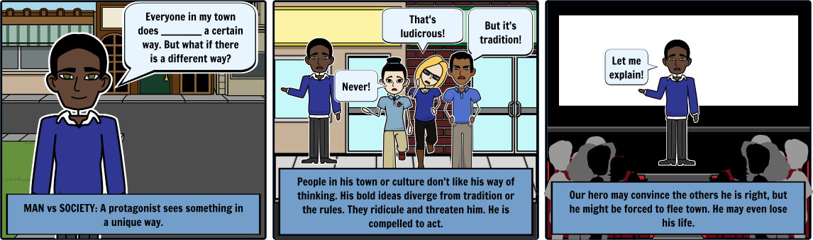
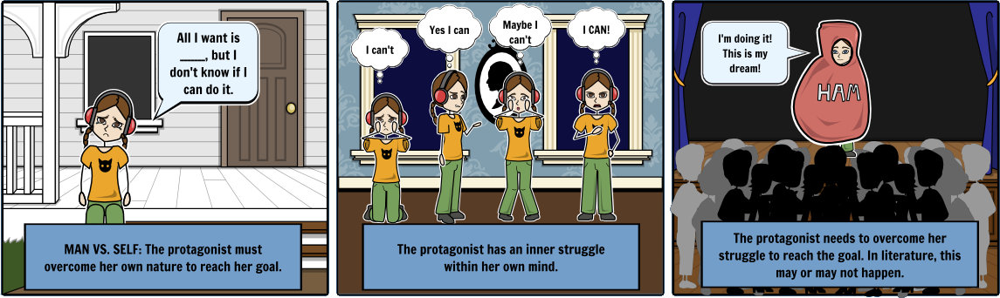
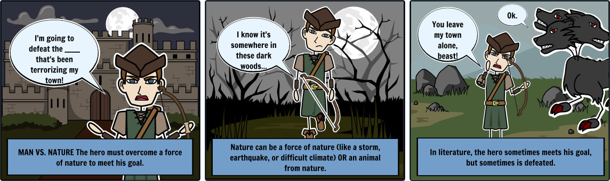
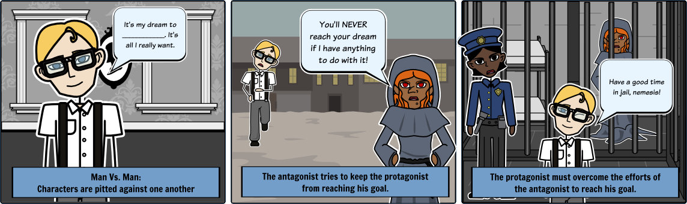

Escrita para animação
conflitos
kkkk
Enredo
Situação inicial
Quebra de situação
Conflito
Conflito interno
Conflito pessoal
Conflito extra-pessoal
- Homem vs. Natureza
- Homem vs. Sociedade
Clímax
Desfecho
Personagem
Tempo
Espaço
São elementos básicos da narração: enredo (ação), personagem, tempo e espaço.
Um enredo pode ser linear ou não linear.
Enredo é o conjunto de fatos ligados entre si que fundamentam a ação de um texto narrativo.
O enredo pode ser organizado de várias formas. Observe a mais comum:
Situação inicial - os personagens e espaço são apresentados.
Quebra da Situação Inicial - um acontecimento modifica a situação apresentada.
Conflito - Surge uma situação a ser resolvida, que quebra a estabilidade de personagens e acontecimentos
Clímax - ponto de maior tensão na narrativa.
Desfecho - solução do conflito. Obs.: essa solução não significa um final feliz.
a) Conflito Interno
São aqueles em que o conflito está no próprio personagem. Ele mesmo é sua limitação e obstáculo. Seu corpo, sua mente, seus sentimentos o atrapalham. São lutadores fracos, alunos incapazes, paqueradores tímidos, empregados incompetentes. As possibilidades são infinitas.
O mais básico dos conflitos internos é o de origem física. O personagem não tem força ou capacidade de executar sua tarefa. Exemplos:
- See more at: http://ligadosbetas.blogspot.com.br/2013/08/conflito-narrativo.html#sthash.3Wwrc0aw.dpuf
b) Conflito Pessoal
São conflitos com outras pessoas. Alguém se coloca diante do personagem e seu objetivo, com clara intenção de impedi-lo. Ou talvez simplesmente está no lugar errado, na hora errada.
O mais básico dos conflitos pessoais nas histórias ocorre entre heróis e vilões
- See more at: http://ligadosbetas.blogspot.com.br/2013/08/conflito-narrativo.html#sthash.3Wwrc0aw.dpuf
c) Conflito Extra-pessoal O obstáculo não são pessoas, mas sim uma organização, uma entidade pública, um governo, uma força superior, um exército, o mundo, a natureza, deuses, o “azar”. - See more at: http://ligadosbetas.blogspot.com.br/2013/08/conflito-narrativo.html#sthash.3Wwrc0aw.dpuf
Man vs. Man, Man vs. Nature, Man vs. Society, and Man vs. Self.
http://www.storyboardthat.com/userboards/rebeccaray/man-vs--society
http://www.storyboardthat.com/userboards/rebeccaray/man-vs--self
http://www.storyboardthat.com/userboards/rebeccaray/man-vs--nature
http://www.storyboardthat.com/userboards/rebeccaray/man-vs--man
http://www.storyboardthat.com/userboards/rebeccaray




Em 2011, Emma Coats, antiga artista de storyboard da Pixar,
publicou na sua conta Twitter 22 regras para criar e contar estórias com estilo Pixar.
Nas linhas abaixo encontrará a lista original acompanhada de tradução e comentários nossos.
- #1: You admire a character for trying more than for their successes.
- # 1: Admire uma personagem por tentar mais do que os seus sucessos.
- #2: You gotta keep in mind what’s interesting to you as an audience, not what’s fun to do as a writer. They can be v. different.
- # 2: Tem que ter em mente o que é interessante para si enquanto audiência, não o que é divertido fazer enquanto escritor. Estes aspetos podem ser muito diferentes.
- #3: Trying for theme is important, but you won’t see what the story is actually about til you’re at the end of it. Now rewrite.
- # 3: Tentar escrever sobre um tema é importante mas não vai ver sobre o que é a história até estar no final. Agora vá reescrever.
- #4: Once upon a time there was ___. Every day, ___. One day ___. Because of that, ___. Because of that, ___. Until finally ___.
- # 4: Era uma vez ___. Todos os dias, ___. Um dia ___. Por causa disso, ___. Por causa disso, ___. Até que finalmente ___.
- #5: Simplify. Focus. Combine characters. Hop over detours. You’ll feel like you’re losing valuable stuff but it sets you free.
- # 5: Simplifique. Foco. Combine personagens. Salte os desvios. Irá sentir que está a perder coisas valiosas mas liberta-o.
- #6: What is your character good at, comfortable with? Throw the polar opposite at them. Challenge them. How do they deal?
- # 6: No que é que a sua personagem é boa, se sente confortável? Atire o oposto contra elas. Desafie as personagens. Como lidam com isso?
- #7: Come up with your ending before you figure out your middle. Seriously. Endings are hard, get yours working up front.
- # 7: Resolva o final antes de descobrir o meio. A sério. Os finais das estórias são difíceis, faça com que o seu funcione desde o início do processo da escrita.
- #8: Finish your story, let go even if it’s not perfect. In an ideal world you have both, but move on. Do better next time.
- # 8: Termine a estória, deixe-a ir mesmo que não seja perfeita. Num mundo ideal conseguiria ambas as coisas mas tem de seguir em frente. Faça melhor da próxima vez.
- #9: When you’re stuck, make a list of what WOULDN’T happen next. Lots of times the material to get you unstuck will show up.
- # 9: Quando estiver bloqueado, faça uma lista do que não iria/irá acontecer em seguida. A solução para desbloquear irá surgir muitas vezes.
- #10: Pull apart the stories you like. What you like in them is a part of you; you’ve got to recognize it before you can use it.
- # 10: Separe as estórias de que gosta. O que gosta nelas é uma parte de si; tem que reconhecer o que é antes de poder utilizar.
- #11: Putting it on paper lets you start fixing it. If it stays in your head, a perfect idea, you’ll never share it with anyone.
- # 11: Colocar em papel permite que comece a corrigir. Se permanecer na sua cabeça, a ideia perfeita, nunca irá partilhá-la com alguém.
- #12: Discount the 1st thing that comes to mind. And the 2nd, 3rd, 4th, 5th – get the obvious out of the way. Surprise yourself.
- # 12: Deixe cair a 1ª coisa que vem à mente. E a 2ª, 3ª, 4ª, 5ª - tire o óbvio do caminho. Surpreenda-se.
- #13: Give your characters opinions. Passive/malleable might seem likable to you as you write, but it’s poison to the audience.
- # 13: Dê opiniões às suas personagens. Passivo/maleável pode parecer simpático para si à medida que escreve mas é veneno para o público.
- #14: Why must you tell THIS story? What’s the belief burning within you that your story feeds off of? That’s the heart of it.
- # 14: Porque tem de contar esta estória? Qual é a crença que queima dentro de si que alimenta a estória? É esse o coração da estória.
- #15: If you were your character, in this situation, how would you feel? Honesty lends credibility to unbelievable situations.
- # 15: Se fosse a sua personagem, nesta situação, como se sentiria? Honestidade dá credibilidade a situações inacreditáveis.
- #16: What are the stakes? Give us reason to root for the character. What happens if they don’t succeed? Stack the odds against.
- # 16: O que está em causa? Dê-nos a razão para torcer pela personagem. O que acontece se elas não conseguirem? Empilhe as probabilidades contra.
- #17: No work is ever wasted. If it’s not working, let go and move on - it’ll come back around to be useful later.
- # 17: Nenhum trabalho é desperdiçado. Se não funciona, deixe e siga em frente - irá voltar a ser útil mais tarde.
- #18: You have to know yourself: the difference between doing your best & fussing. Story is testing, not refining.
- # 18: Tem que conhecer-se a si mesmo: a diferença entre fazer o seu melhor e espalhafato/exagero. Estória é testar, não refinar.
- #19: Coincidences to get characters into trouble are great; coincidences to get them out of it are cheating.
- # 19: Coincidências para colocar personagens em apuros são óptimas; coincidências para tirá-las de sarilhos é fazer batota.
- #20: Exercise: take the building blocks of a movie you dislike. How d’you rearrange them into what you DO like?
- # 20: Faça o exercício: separe os blocos de um filme de que não gosta. Como é que reorganizava os blocos para criar algo de que gostasse?
- #21: You gotta identify with your situation/characters, can’t just write ‘cool’. What would make YOU act that way?
- # 21: Tem que se identificar com a sua situação/personagens, não pode apenas escrever 'fixe'. O que faria com que você agisse dessa forma?
- #22: What’s the essence of your story? Most economical telling of it? If you know that, you can build out from there.
- # 22: Qual é a essência da sua estória? Qual é versão mais curta/sintetizada? Se sabe isso, pode construir a partir daí.